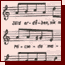
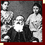

|  | ||
| The rooster is already crowing |
| 1808 | ||
| Rabbi Moses Teitelbaum (1759–1841) |
1821
| 1781 | Rabbi Jichak Eizik Taub (1750–1829) | |||||
|
||||||
| 1789 | Rabbi Áron Chorin (1766–1844) | |||||
| 1790 | Moshe Minc (about 1750–1831) | |||||
| 1795 | The synagogue in Mád | |||||
| 1806 | Chatam Sofer (1762–1839) | |||||
|
||||||
| 1820– 1821 |
The synagogue in Óbuda | |||||
| 1850 |  | Rabbi Lipót Lőw (1811–1875) and his family | ||||
| 1859 | The Dohány Street Synagogue, Budapest | |||||
| 1859 | The consecration of Dohány Street Synagogue | |||||